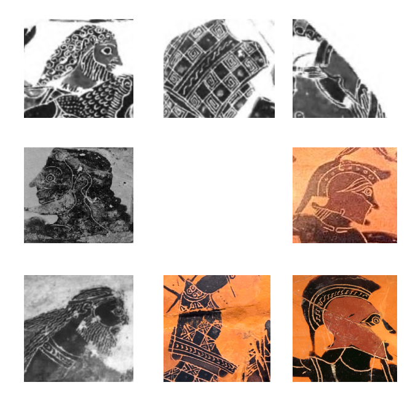
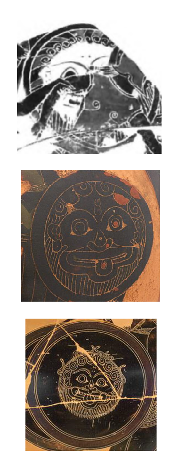

Les Morts, les Agonisants et les Menacés
Scènes mythologiques et quotidiennes sur les vases à vin attiques
jusqu'en 450 av. J.-C.
Xinhe YU
Doctorante en 4è année de l'EPHE
Sous la direction de François QUEYREL
le 16 février 2023
Plan de présentation
- Problématique et méthodologie
- Présentation de cas
particuliers :
- Combat d'Héraclès et de Kyknos chez Lydos
- Mort de Troïlos chez le groupe de Léagros
Changement du titre
Nouveau Titre
Les Morts, les Agonisants et les Menacés.
Scènes mythologiques et quotidiennes sur les vases à vin attiques jusqu’en 450
avant J.-C.
Ancien Titre
Les images de morts sur les vases à boire jusqu’en 450 av. J.-C.
Méthodologie
- Approche stylistique
- Approche iconologique
Structure de la thèse
- Chapitre I -575 ~ -550
- Groupe C
- Chapitre II -560 ~ -525
- Lydos Exékias
- Chapitre II -530 ~ -500
- Groupe de Léagros
- Groupe de pionniers
- Chapitre IV -500 ~ -475
- Groupe de Syriskos
- Chapitre V -475 ~ -450
- Peintre de Niobides
Étude de cas :
Combat d'Héraclès et de Kyknos chez Lydos
Enrico PARIBENI (1975). « Lavinium II ». In : Lavinium. II. Le Tredici are. Sous la dir. de Ferdinando CASTAGNOLI et al. Rome : De Luca, p. 376-378.
| Fragment de Cortone |  |
|---|---|
| Lydos (début, -560 ~ -555) | |
| Lydos (milieu, -555 ~ -540) |
| Fragment de Cortone |  |
|---|---|
| 310333/ Amphore à panse, style proche au Groupe E, Vienne, Kunsthistorisches Museum, 3596, vers -575 ∼ -500 |
|
| 10309/ Amphore à panse, Groupe E et Exékias (potier), Paris, Louvre, F53, vers -550 ∼ -545. |
310167/ Amphore à panse, Lydos, Paris, Musée du Louvre, F29, vers -560.
310183/ Œnochoé, Lydos (ou Peintre d’Epitimos) et Kolchos (potier),
Berlin, Antikensammlung, F1732, vers -540 ~ -535.
310196/ Assiette (fragments), Lydos, Athènes, Musée national, 1.2410.
Étude de cas :
Mort de Troïlos et Ilioupersis chez le groupe de Léagros
- groupe d'Antiope
- groupe de Wurtzbourg 210
- groupe de Vatican 424
- peintre d'Acheloos
- ...
Λέαγρος (καλός)
302030/ Hydrie (détail), Groupe de Léagros, Wurtzbourg, Martin von Wagner Museum, L311, vers -510.
302022/ Hydrie, Groupe de Léagros («~very close to~» groupe d'Antiope selon Beazley), Munich, Antikensammlungen, J65 / 1700, provenance de Vulci, vers -510.
300496/ Lékanis, Peintre C,
Naples, Museo Archeologico Nazionale, 132642,
provenance de Cumes.

310170/ Amphore à panse, Lydos et Amasis (potier), Berlin, Antikensammlung, F1685, provenance de Vulci, vers -550 ~ -540.
302021/ Hydrie, Groupe de Léagros, Estoril (Lisbonne), Manuel Vinhas.
302023/ Hydrie, Groupe de Vatican 424, Londres, BM, B326 / 1837,0609.69.
302030/ Hydrie, Groupe de Léagros, Wurtzbourg, Martin von Wagner Museum, L311, vers -510.
302170/ Amphore à col, Groupe de Léagros, Londres, British Museum, B241 / 1843,1103.22, provenance de Vulci.
310005/ Amphore à col (détail), Peintre de Timiadès, Munich, Antikensammlungen, 1426, vers -570, provenance de Vulci.
310006/ Amphore à col (détail), Peintre de Prométhée, Florence, Museo archeologico nazionale, 70993, provenance de Pescia Romana, vers -560 ~ -540.
28761/ Coupe (f.r.), Scythes (peintre), Malibu (CA), The J. Paul Getty Museum, 83.AE.247, vers -520 ~ -490.
Références
The Development of Attic Black-Figure.
Berkeley : University of California Press.
The So-called Nonsense Inscriptions on Ancient Greek Vases. Between
Paideia and Paidiá.
Brill Studies in Greek and Roman Epigraphy 10. Leyde :
Brill.
Lydos
« A Black-Figured Vase
Attributed to Lydos ». In : The
Metropolitan Museum of Art Bulletin 27.3, p. 74-79.
Ho Ludos kai to ergo tou. Sumbolē stēn
ereuna tēs Attikēs melanomorphēs angeiographias.
Athènes : Genikē
dieuthunsis arxaiotēton kai anastēloseos.
« Die berliner
Kolchoskanne. Bild, Form und Funktion ».
In : Corpus Vasorum
Antiquorum, Österreich,
Beiheft 3: Griechische Vasen als Medium für Kommunikation.
Ausgewählte Aspekte. Akten des internationalen Symposiums im
Kunsthistorischen Museum Wien, 5.–7. Oktober 2017. NED - New
edition, 1. Austrian Academy of Sciences Press, p. 147-156.
Groupe de Leagros
« Töpfer und Maler, Klasse und Gruppe. Beazley und die
Leagrosgruppe ». In :
Töpfer Maler Werkstatt. Zuschreibungen in der griechischen
Vasenmalerei
und die Organisation
antiker Keramikproduktion. Sous la dir. de Norbert ESCHBACH et Stefan SCHMIDT.
Beihefte zum Corpus
Vasorum Antiquorum 7.
Munich : Beck, p. 96-106.